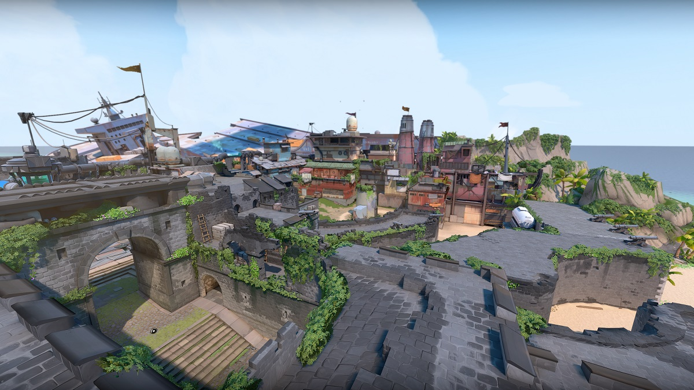

Fracture
A top secret research facility split apart by a failed radianite experiment. Fracture features two parallel one-way ziplines that bisect the map. These ziplines do not act like ziplines found on other maps, and have special rules to their interactions:
Breeze
Take in the sights of historic ruins or seaside caves on this tropical paradise. Breeze's 'unique' features are present on the A side of the map, mostly to do with A Hall. There are ropes to get players into A Hall.
Fracture
Your next battleground is a secret Kingdom excavation site overtaken by the arctic. The two plant sites protected by snow and metal require some horizontal finesse.
Bind
Two site map (A and B) that has attackers infiltrating from a beach coast. It's currently among the top 4 most played maps and is a favorite of Valorant teams like Fnatic, Acend, G2 Esports, and Gambit Esports. Bind is a pretty well-balanced map.
Haven

Beneath a forgotten monastery, a clamour emerges from rival Agents clashing to control three sites.A three site map (A, B, C), which is also its unique aspect as most bomb/defusal maps in FPS games tend to be two sites.
Split
If you want to go far, you will have to go up. A pair of sites split by an elevated center allows for rapid movement using two rope ascenders. Split was the first map to use ascenders. There are three sets on the map.
Ascent
An open playground for small wars of position and attrition divide two sites on Ascent. Ascent is one of the best classic maps in Valorant. It is simple and easy to learn, and there are many avenues for both attacking and defending.